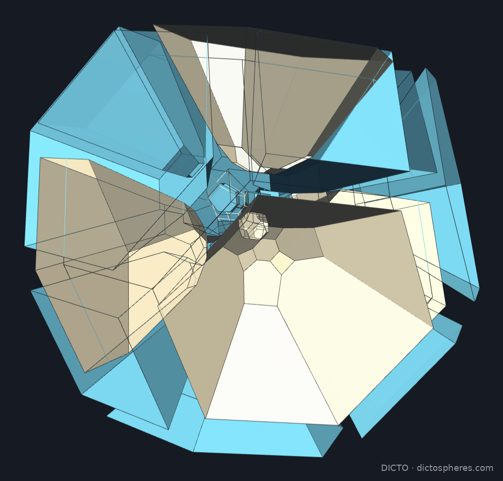
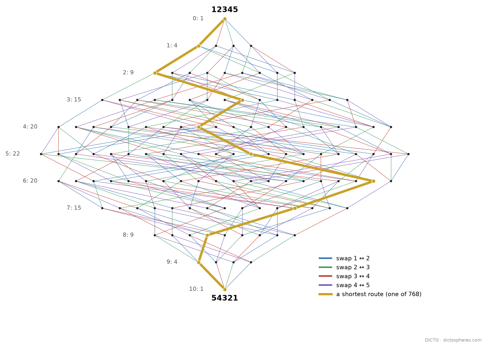
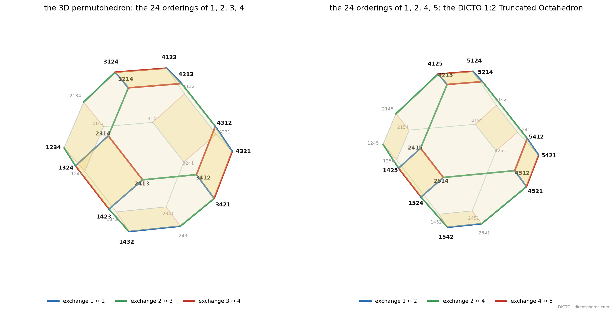
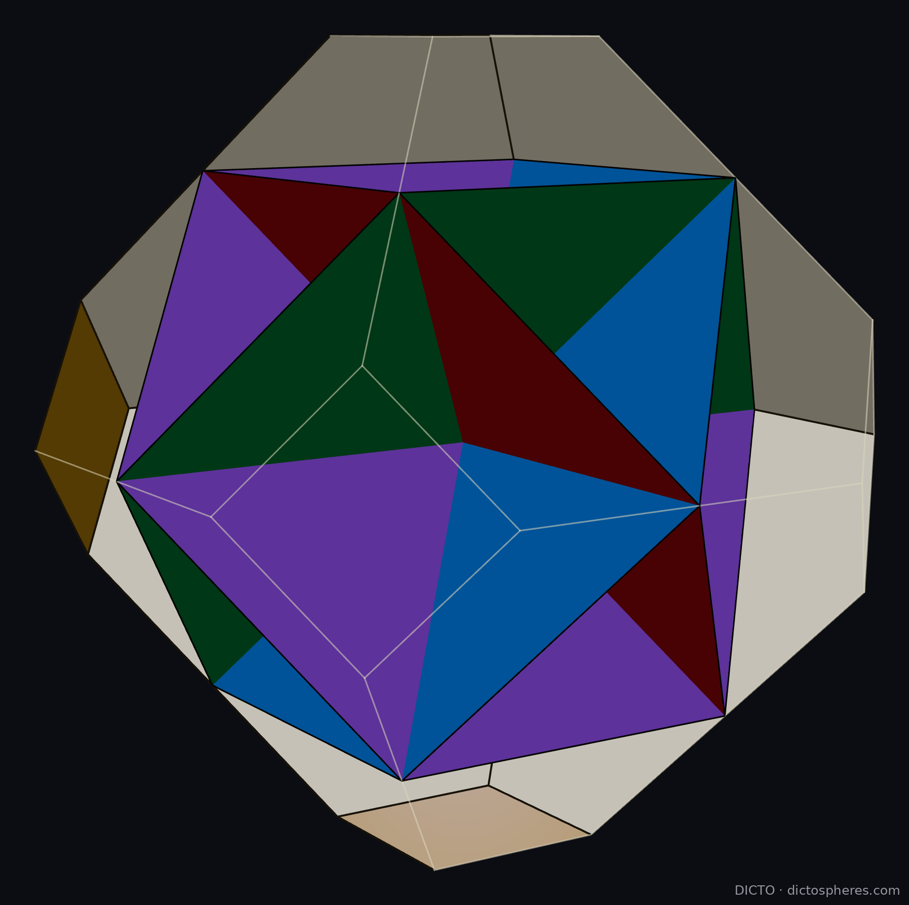
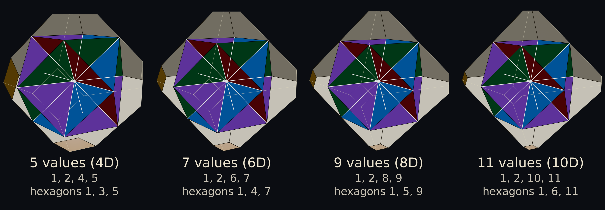
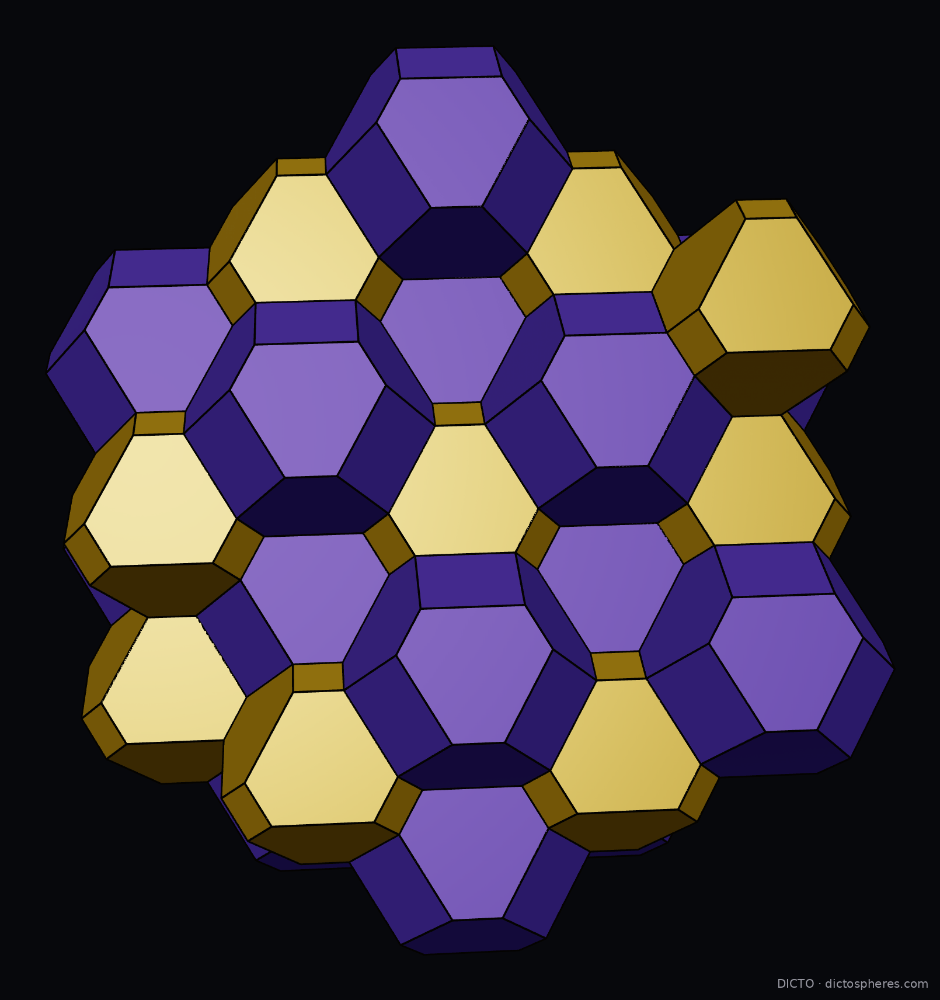
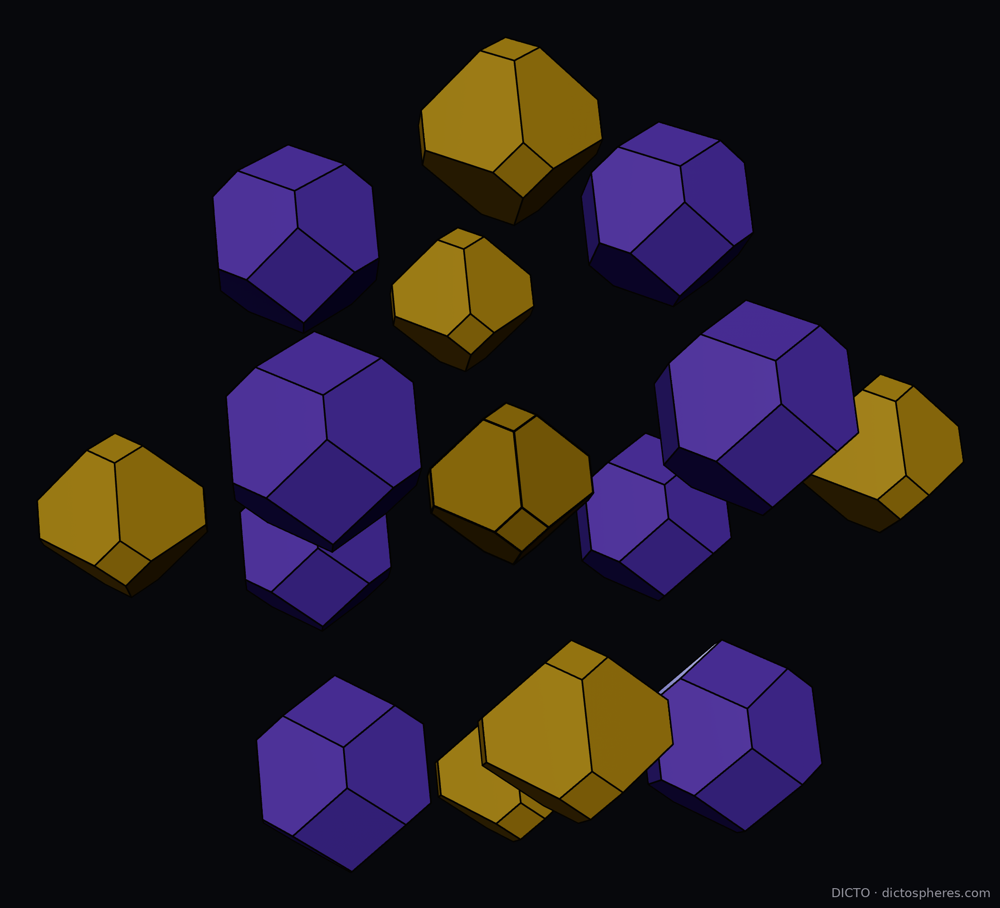

Version 4 adds Lemma 2a and Theorem 2b: in every odd dimension the central slices of the heart cross in permutohedra of explicit values, down to a regular hexagon; the answers to Leads 1 and 3; and a search for earlier Vacuus forms in four dimensions (none found). No earlier result changes.
Version 3 adds a reference list (each entry checked against its publisher's record), the path of DICTO's work that led here (Section 6), #93's theorem that the DICTO 1:2 and 2:1 fill space together in exactly one way, the resonance arrangement for the two-valued slices, and credits from a gallery search for the figures. No result changes.
Version 2 adds the hero shots from the page The 4D Permutohedron (Build, cells pulled apart), Figure 2 (the orderings on every corner, the exchanges on every edge), the cutaways of the heart (Figure 3) and of the DICTO 1:2 Truncated Octahedron's own 3D Vacuus (Figure 4: three octagons in the coordinate planes, twelve hexagons), and names the cells as what they are, permutohedra. No result changes.
Version 1. Theorems 1–4 are proved here, each count also checked by exact computer arithmetic (rational and ℚ(√5)); checked before release by an in-house panel of four automated referees and one independent attack (reports and judgements kept with the paper's data).

Write the numbers 1 to 5 in every possible order: 12345, 12354, …, 54321. There are 120 orders. Link two of them whenever one becomes the other by swapping two neighbouring values, 2 and 3 say. The result is a web of 120 knots and 240 exchanges, and it is the skeleton of a four-dimensional solid, the 4D permutohedron. Its smallest rings are its faces: squares, where two swaps do not disturb each other, and hexagons, where three swaps go round and come back (Figure 1). This paper builds the 4D Vacuus of that solid: the few flat slices through its centre that between them carry every face, and so every rule of the web.

The 4D permutohedron is the convex hull of the 120 points (p₁, …, p₅) whose coordinates are 1, …, 5 in some order; it lies in the 4-space p₁ + … + p₅ = 15, centred at (3, 3, 3, 3, 3). It is simple (four edges at each corner) and has 240 edges, 150 two-dimensional faces (60 hexagons, 90 squares) and 30 cells: 10 three-dimensional permutohedra of four consecutive values (one coordinate fixed at 1 or at 5; classically the truncated octahedron) and 20 hexagonal prisms. Its edges join orders that differ by swapping two neighbouring values, so its skeleton is the web above: four exchanges at every knot, in ten directions. The following facts are classical and were recounted exactly (web_of_bonds.py): the number of exchanges between two orders is the number of pairs they put in opposite order; 54321 is farthest from 12345, ten exchanges away, along 768 shortest routes (Stanley's count of reduced words of the longest permutation); the 2-faces are the web's rings, a square for two swaps of disjoint value pairs and a hexagon for the braid ring sksk+1sk = sk+1sksk+1. In #104 the same solid was swept by a moving 3-space: 26 cells are born, 66 pairs swap and 26 cells die, and these are the numbers of orders with one, two and three descents (1, 26, 66, 26, 1): the h-vector of the permutohedron is the Eulerian numbers (Postnikov, Reiner and Williams 2008).
The Vacuus of a centrally symmetric polytope is the set of hyperplanes through its centre spanned by its ridges (the faces one dimension below the cells), each ridge lying in exactly one; a slice is the polytope cut by one of them. DICTO's Vacuus solids (#87) are built from such central slices (there as fins, one per edge, which for these solids fill central discs): the octahedron from three squares through its centre that carry all its edges, the cuboctahedron from four hexagons. One dimension up the slices are 3D and carry the 2-faces. A 2-face of the 4D permutohedron does not pass through the centre, so together with the centre it spans exactly one 3-space through the centre: its central slice. The 4D Vacuus is the set of these slices.
A 2-face is an ordered split of the positions {1, …, 5} into three blocks B₁, B₂, B₃ of sizes (a, b, c): the positions in B₁ hold the a smallest values in any order, those in B₂ the next b, those in B₃ the largest c. Its central slice has the normal vector that takes the value c₁ = bc(b + c) on B₁, c₂ = −ac(a + 2b + c) on B₂ and c₃ = ab(a + b) on B₃ (it is orthogonal to (1, …, 1), constant on each block, and orthogonal to the vector of centred block sums S₁ = −a(b + c)/2, S₂ = b(a − c)/2, S₃ = c(a + b)/2, so its hyperplane passes through the face; checked against exact elimination for every 2-face).
| slices | split (a, b, c) | normal (values on B₁ | B₂ | B₃) | slice shape | edge lengths² | faces of the 4D solid carried |
|---|---|---|---|---|---|
| 30 | (1, 2, 2) | (8 | −7 −7 | 3 3) | 32 corners, 52 edges; 14 four-sided faces (2 of them squares) + 8 hexagons | eight values, 13/18 to 8 | 2 squares |
| 20 | (1, 1, 3) | (6 | −9 | 1 1 1) | truncated-octahedron type: 6 rectangles + 8 hexagons (2 regular) | 2 and 56/9 | 2 hexagons |
| 10 | (1, 3, 1) | (3 | −2 −2 −2 | 3) | 24 corners, 42 edges; 18 four-sided faces (6 squares, 12 trapezoids) + 2 regular hexagons | 2, 4, 8 | 2 hexagons |
| 5 | (2, 1, 2) | (1 1 | −4 | 1 1) | the DICTO 1:2 Truncated Octahedron (permutohedron of 1, 2, 4, 5): 6 squares + 8 hexagons | 2 and 8 | 6 squares |
Proof. The normal formula shows that a slice depends only on the blocks and the values (c₁, c₂, c₃); since c₁ > 0 > c₂, for five values two splits give the same slice only if they are reverses of each other (B₃, B₂, B₁), or, when a = c, have the same middle block (for an even number of values there is one more coincidence, Theorem 3). Counting: splits (1, 1, 3) and (1, 2, 2) give 5!/(1!1!3!) = 20 and 5!/(1!2!2!) = 30 slices; (1, 3, 1) and (2, 1, 2) give C(5, 3) = 10 and C(5, 1) = 5; in all 65, and 30·2 + 5·6 = 90 squares, 20·2 + 10·2 = 60 hexagons. Slices with the same split are images of one another under a permutation of the coordinates, so they are congruent. The shapes were computed in exact rational arithmetic: corners are the solid's corners on the slice and the points where edges cross it; every face proposed by a hull routine was confirmed exactly (all its corners on one plane, every other corner strictly on one side), and every shape has Euler number 2. ∎
An earlier floating-point count split the 30 congruent slices of the first row into several apparent types; the exact computation above supersedes it.
The five slices of the last row are the slices pi = 3: the middle value held in one place while the other four take 1, 2, 4, 5 in every order. Each is the 3D permutohedron of the values 1, 2, 4, 5: the DICTO 1:2 Truncated Octahedron, a truncated octahedron in shape (the same faces meeting in the same way as Archimedes', but not his equal-edged solid) with squares of side 1 and hexagons whose sides are 1 and 2 in turn (√2 and 2√2 in these coordinates), and it carries the six squares of the 4D solid in which the middle value stays put. These five are the heart of the Vacuus (Figure 3). Sweeps of sections parallel to a cell, which pass through such a slice, are known (J. Bowers; Galoomba, Polytope Wiki); we found none that names the central one as the permutohedron of 1, 2, 4, 5 or shows the five together.

Proof. A point lies in the permutohedron exactly when its coordinates sum to 15 and its k largest coordinates sum to at most 5 + 4 + … (the k largest values), for every k (majorization; Rado 1952, after Hardy, Littlewood and Pólya). With pi = pj = 3 and the other three q₁, q₂, q₃ summing to 9, these conditions reduce to 1 ≤ qm ≤ 5: a hexagon with corners the orders of (1, 3, 5), each at distance √8 from the centre and from its neighbours. The plane meets no corner or edge of the solid; its six corners are where it pierces 2-faces, which was confirmed exactly by intersecting the plane with all 150 faces. Three conditions pi = pj = pk = 3 leave q₁ + q₂ = 6 with 1 ≤ q ≤ 5, a segment; four leave the centre. ∎

The heart repeats one dimension up and one dimension further, and the way its slices cross follows one rule. Hold one coordinate still at a value t: what is left is again a permutohedron, of values that can be read off at once.
Proof. Write Vs for the sum of the s largest values and Ys for the sum of the s largest of the other coordinates y. The point (t, y) lies in P exactly when its coordinates sum to Vn and, for every s, its s largest coordinates sum to at most Vs (majorization). Those s largest are either the s largest of y, or t with the s − 1 largest of y; so the conditions read Ys ≤ min(Vs, Vs+1 − t) for every s, with Yn−1 = Vn − t. Since vs+1 ≥ t for s < p and vs+1 ≤ t for s ≥ p, the minimum is Vs for s < p and Vs+1 − t for s ≥ p. These are the partial sums of the values v1, …, vp−1, vp + vp+1 − t, vp+2, …, vn, which are again in decreasing order; so the conditions say exactly that y is majorized by them, that is, y lies in their permutohedron. ∎
Proof. Apply Lemma 2a k times with t = c. When c is one of the remaining values (always for the first step) it is taken out. When it is not, the middle has a gap c − j … c + j around it, and the neighbours c − j, c + j are replaced by (c − j) + (c + j) − c = c: the gap widens by one on each side and c comes back. Starting from 1, …, n the steps alternate: take out c, replace c − 1 and c + 1 by c, take out c, replace c − 2 and c + 2 by c, and so on, which is the rule. With n − 3 values taken out the three left are 1, c, n, equally spaced, and the permutohedron of three equally spaced values is a regular hexagon. ∎
| k slices crossing | 7 values (the 6D permutohedron) | 9 values (the 8D permutohedron) |
|---|---|---|
| 1 | 1, 2, 3, 5, 6, 7 | 1, 2, 3, 4, 6, 7, 8, 9 |
| 2 | 1, 2, 4, 6, 7 | 1, 2, 3, 5, 7, 8, 9 |
| 3 | 1, 2, 6, 7 | 1, 2, 3, 7, 8, 9 |
| 4 | 1, 4, 7: regular hexagon | 1, 2, 5, 8, 9 |
| 5 | 1, 7: segment | 1, 2, 8, 9 |
| 6 | centre | 1, 5, 9: regular hexagon |
| 7 | 1, 9: segment |
For five values this is Theorem 2: one slice, the permutohedron of 1, 2, 4, 5; two, the regular hexagon of 1, 3, 5; three, the segment from 1 to 5. Every row of the table, every row for 3 and 5 values, and the three crossings drawn for 11 values in Figure 3b were also checked by computer: every order of the stated values lies in the section, and the two agree in their extent in 200 random directions, exactly (heart_every_dim.py); a deliberately wrong set of values is rejected each time. So the seven central slices of the 6D permutohedron are 5D permutohedra of 1, 2, 3, 5, 6, 7, any two of them cross in the 4D permutohedron of 1, 2, 4, 6, 7, and the hearts nest down to a regular hexagon at every odd size.

The heart nests the dimensions inside one another: the 4D permutohedron of 1, …, 5 holds at its centre, five times, the 3D permutohedron of the four values that remain when the middle one is taken out; in the same way the hexagon of the orders of 1, 2, 3 holds the segment between the orders of 1 and 3. This works whenever the number of values is odd, so that there is a middle value to hold still. (For any value v the hyperplane pi = v meets no edge inside it, since an edge changes two coordinates from k, k + 1 to k + 1, k through non-integers; so the slice pi = v is the permutohedron of the other n − 1 values, and it passes through the centre exactly when v is the middle value.)
The construction works for the permutohedron of 1, …, n in dimension n − 1: its ridges (faces one dimension below the cells) are the ordered splits into three blocks, and each spans one central slice with the centre.
| n (dimension) | 3 (2) | 4 (3) | 5 (4) | 6 (5) | 7 (6) | 8 (7) | 9 (8) |
|---|---|---|---|---|---|---|---|
| ridges | 6 | 36 | 150 | 540 | 1806 | 5796 | 18150 |
| Vacuus slices N(n) | 3 | 15 | 65 | 225 | 770 | 2443 | 7761 |
Proof. By the normal formula, a split with a ≠ c gives a slice whose normal takes three different values; the normal is unique up to scale, its level sets are the blocks, its one negative level is B₂, and the two positive levels are B₁ and B₃ in either order, so only the split and its reverse give the slice, and no two-valued slice can equal it: the first sum. A split with a = c gives a normal with two values, c₁ on S = B₁ ∪ B₃ (of even size 2a) and c₂ on the middle block T; the ratio c₁ : c₂ = −b : 2a depends only on the sizes of S and T, so the slice is fixed by the unordered pair {S, T}, and every pair with |S| even and at least 2 occurs. When n is odd exactly one of S, T has even size: 2n−1 − 1 pairs. When n is even, |S| = 2a is even so |T| is even too, and the split (a, b, a) gives the same slice as (b/2, 2a, b/2) with S and T exchanged: the pairs with both parts even, (2n−1 − 2)/2 = 2n−2 − 1. The two-valued slices are the hyperplanes Σi∈S xi = 0 through the centre (centred coordinates), parallel to facets: members of the resonance (all-subsets) arrangement (Kamiya, Takemura and Terao 2011; Billera et al. 2012; Kühne 2023). The three-valued slices are not of that kind. In closed form, with cn the central trinomial coefficient (1, 1, 3, 7, 19, 51, …; OEIS A002426), the splits with a = c number An = cn − 1 − [n even]·C(n, n/2), and N(n) = (3n − 3·2n + 3 − An)/2 + T(n). Brute force over every ridge for n = 3, …, 9, with each slice found by exact elimination, gives the same numbers (vacuus_general.py). ∎
In two dimensions the Vacuus of the hexagon is its three long diagonals; in three, the 3D permutohedron's 36 edges lie on 15 planes through its centre. So do the 36 edges of the DICTO 1:2 Truncated Octahedron: its 15 cards are three octagons in the three coordinate planes, slotted at right angles like the three squares of the octahedron Vacuus, each carrying 4 edges, and twelve hexagons carrying 2 each (Figure 4; vacuus3d_12.py, exact). Neither N(n) nor its three-valued part (0, 12, 50, 210, 707, 2380, 7506) is in the On-Line Encyclopedia of Integer Sequences (searched 11 November 2026 for 3, 15, 65, 225, 770, 2443 and for 12, 50, 210, 707, 2380); we make no stronger claim of novelty.

DICTONIC's golden bond (#48, Theorem 4) uses the family of semi-uniform truncated octahedra T(x), the hull of all signed orders of (1 + x, x, 0) (Koca et al. 2015: the orbit of the octahedral group with Dynkin labels (1, x, 0)), which with T(1/x) on the cube centres fills space. It is a walk through permutohedra. At x = 1/2 the partner T(2) is the DICTO 2:1 Truncated Octahedron: squares of side 2, hexagons with sides 2 and 1 in turn, the permutohedron of −5, −1, 1, 5; the two solids' hexagons are congruent, and along a shared hexagon each edge of the 1:2 between two hexagons meets an edge of the 2:1 between a hexagon and a square. The 1:2 alone cannot fill space by translations: its hexagons are not centrally symmetric (side 1 is opposite side 2), and a convex solid that fills space by translations has centrally symmetric facets (Minkowski for lattices; Venkov, McMullen in general). Whether turned and mirrored copies can do it is not settled here. With its partner the answer is complete: in #93 the pieces Pμ and Qμ = P3−μ have squares of edge √2(μ − 1) and hexagon sides alternating with √2(2 − μ), so at μ = 4/3 they are the DICTO 1:2 and the DICTO 2:1, and #93's Theorem A says that every tiling by the two is the caesium-chloride one: they fill space together in exactly one way.
Three solids. Read by the ratio of square side to hexagon side, the slider holds three simplest members: the 1:1 (the 3D permutohedron itself, Kelvin's truncated octahedron, x = 1), which fills space alone and is its own partner; and the DICTO 1:2 and DICTO 2:1 Truncated Octahedra (x = 1/2 and x = 2), mirror images of each other in proportion, which fill space only together. (A 2:2 is the 1:1 at twice the size: only the ratio decides the shape.) Every other ratio on the slider pairs with its reverse in the same way.
Proof. The map y ↦ ½(y₁ + y₂ − y₃ − y₄, y₁ − y₂ + y₃ − y₄, y₁ − y₂ − y₃ + y₄) is an isometry of the 3-space y₁ + … + y₄ = 0 onto ordinary space. It sends the order (q, p, −p, −q) to (p + q, q − p, 0), and the 24 orders of −q, −p, p, q to the 24 signed orders of (p + q, q − p, 0), which are the corners of T(x) scaled by (q − p)/x when (1 + x)/x = (p + q)/(q − p), that is x = (q − p)/(2p). For x = τ, q = p(1 + 2τ) = pτ³. Checked exactly for x = 1/2, 1 and τ by comparing all 276 distances between corners (dictonic_family.py). ∎



The DICTO 1:2 Truncated Octahedron grew from two lines of DICTO's work. The first began in Polyhedraverse, where rhombic dodecahedra cut in half and rejoined gave a slightly irregular truncated octahedron that still filled space (#58). #48 then placed truncated octahedra in a family T(x), each filling space with its partner T(1/x), from Kelvin's cell at x = 1 to the golden pair, the Icosaxes and the Unborn Axes, at x = τ; the DICTO 1:2 is its member x = 1/2. #52 read the family as one weight sliding between the two kinds of site of the caesium-chloride network, and #93 proved that each pair on the walk fills space in that one way only. The hexagons of the DICTO 1:2 are truncated triangles, the face that #88 found running through the golden cuts: there their sides are in the ratio φ, here in the ratio 2; and #88 and #89 found the golden pairs as slices of four-dimensional solids. The second line is the Vacuus: #44 cut the Platonic solids from their centres into Aristotle's pyramids, and #87 kept only the walls between those pyramids, one fin on every edge, so that the octahedron's Vacuus is three squares through its centre and the cuboctahedron's four hexagons. This paper joins the two: one dimension up, the walls become three-dimensional central slices of the 4D permutohedron, and the five at its heart are DICTO 1:2 Truncated Octahedra, the stop x = 1/2 of the slider of #48.
Answered since Version 3. Lead 1 of Version 3, the Vacuus of the other 4D polytopes: #107 The Vacuus of the Queens proved the Mirror Law (the faces of a Wythoff polytope lie on mirrors of its group exactly when its unringed nodes allow it), so every face of the 600-cell and the 120-cell lies on the 60 mirrors of their group; and #108 The Atlas of the Chains scanned every such polytope of the groups A4, B4, F4 and H4 for central slices off the mirrors that carry three or more faces: only the runcinated 5-cell and the 4D permutohedron have them, and the permutohedron's are the five DICTO 1:2 Truncated Octahedra of its heart. The permutohedron has every node ringed, so by the Mirror Law none of its faces lies on a mirror: its whole Vacuus lies off the mirrors. Lead 3 of Version 3, the heart for seven values: Theorem 2b.
(1) The golden slice of the permutohedron honeycomb (the 4D permutohedra fill 4-space) as a non-repeating 3D filling: its shapes counted exactly. (2) An even number of values has no middle value to hold still: what, if anything, forms the heart of the permutohedra of 1, …, 2m. (3) A physical build of the heart: five card permutohedra cannot be slotted in ordinary space, but their ten crossing hexagons can be shown in the app.
M. Aguiar and S. Mahajan, Topics in Hyperplane Arrangements, Math. Surveys Monogr. 226, AMS (2017), doi:10.1090/surv/226. · L. J. Billera, J. Tatch Moore, C. Dufort Moraites, Y. Wang and K. Williams, Maximal unbalanced families, arXiv:1209.2309 (2012). · A. Björner and F. Brenti, Combinatorics of Coxeter Groups, Grad. Texts in Math. 231, Springer (2005). · M.-C. Brandenburg, J. A. De Loera and C. Meroni, The best ways to slice a polytope, Math. Comp. 94 (2025) 1003–1042, doi:10.1090/mcom/4006. · J. H. Conway and N. J. A. Sloane, Sphere Packings, Lattices and Groups, Springer (1988; 3rd ed. 1999). · H. S. M. Coxeter, Regular Polytopes, 3rd ed., Dover (1973). · E. S. Fedorov, Elements of the theory of figures (Russian), Zap. Imp. S.-Peterburg. Mineral. Obshch. (2) 21 (1885) 1–279; see M. Senechal and R. V. Galiulin, An introduction to the theory of figures: the geometry of E. S. Fedorov, Structural Topology 10 (1984) 5–22. · G. Th. Guilbaud and P. Rosenstiehl, Analyse algébrique d'un scrutin, Math. Sci. Hum. 4 (1963) 9–33. · G. H. Hardy, J. E. Littlewood and G. Pólya, Inequalities, Cambridge University Press (1934). · H. Kamiya, A. Takemura and H. Terao, Ranking patterns of unfolding models of codimension one, Adv. in Appl. Math. 47 (2011) 379–400, doi:10.1016/j.aam.2010.11.002. · M. Koca, N. O. Koca, M. Al-Mukhaini and A. Al-Qanobi, Quaternionic representations of the pyritohedral group, related polyhedra and lattices, arXiv:1506.04600 (2015). · L. Kühne, The universality of the resonance arrangement and its Betti numbers, Combinatorica 43 (2023) 277–298, doi:10.1007/s00493-023-00006-x. · P. McMullen, Convex bodies which tile space by translation, Mathematika 27 (1980) 113–121. · A. Postnikov, Permutohedra, associahedra, and beyond, Int. Math. Res. Not. 2009 (2009) 1026–1106. · A. Postnikov, V. Reiner and L. Williams, Faces of generalized permutohedra, Doc. Math. 13 (2008) 207–273. · R. Rado, An inequality, J. London Math. Soc. 27 (1952) 1–6. · P. H. Schoute, Analytical treatment of the polytopes regularly derived from the regular polytopes, Verh. Kon. Akad. Wetensch. Amsterdam (Eerste Sectie) 11, no. 3 (1911). · R. P. Stanley, On the number of reduced decompositions of elements of Coxeter groups, European J. Combin. 5 (1984) 359–372. · W. Thomson (Lord Kelvin), On the division of space with minimum partitional area, Phil. Mag. (5) 24 (1887) 503–514, doi:10.1080/14786448708628135. · B. A. Venkov, On a class of Euclidean polyhedra, Vestnik Leningrad. Univ. 9 (1954). · G. M. Ziegler, Lectures on Polytopes, Grad. Texts in Math. 152, Springer (1995). · DICTO (DICTO DOI, all versions): #44 Aristotle's Pyramid (10.5281/zenodo.23529497); #48 The Golden Split (23596362); #52 The Web of Bonds (23629252); #58 From the Octet to Every Stacking: the Web of Bonds (23665944); #87 DICTO Vacuus Solids (23896015); #88 Every Platonic Solid Has Exactly Two Golden Cuts (23896439); #89 All Five Golden Pairs Are Slices of Four-Dimensional Solids (23917931); #93 One Double Pyramid, Two Splits (23933666); #104 Scutoid Tissues in Four Dimensions (24111864); the apps Rhombiverse and Polyhedraverse (dictospheres.com), where the rhombic dodecahedron is taken apart into a cube and six pyramids, halves and quarters.
G. M. Ziegler, Lectures on Polytopes, Springer GTM 152 (1995), Example 0.10 (the permutohedron, its faces as ordered partitions); R. P. Stanley, On the number of reduced decompositions of elements of Coxeter groups, European J. Combin. 5 (1984) 359–372 (768 = the number of reduced words of 54321); A. Björner and F. Brenti, Combinatorics of Coxeter Groups, Springer GTM 231 (2005) (the weak order; braid and commutation relations); A. Postnikov, Permutohedra, associahedra, and beyond, IMRN 2009 (permutohedra of arbitrary values); J. H. Conway and N. J. A. Sloane, Sphere Packings, Lattices and Groups (the permutohedron as the Voronoi cell of An*); OEIS searches 11 Nov 2026 for 3, 15, 65, 225, 770, 2443 and 12, 50, 210, 707, 2380 (no match), A002426 (central trinomial coefficients); M. Koca, N. O. Koca, M. Al-Mukhaini, A. Al-Qanobi, Quaternionic representations of the pyritohedral group, related polyhedra and lattices, arXiv:1506.04600 (2015), eq. 49 (T(x)); R. Rado, An inequality, J. London Math. Soc. 27 (1952) 1–6, and G. H. Hardy, J. E. Littlewood, G. Pólya, Inequalities (1934) (majorization); arXiv 2509.13877, To cover a permutohedron (covering corners by hyperplanes, a different question); arXiv 1305.6097, Permutonestohedra; B. A. Venkov, On a class of Euclidean polyhedra, Vestnik Leningrad Univ. 9 (1954), and P. McMullen, Convex bodies which tile space by translation, Mathematika 27 (1980) (a translation tiler has centrally symmetric faces, after H. Minkowski 1897). For the figures (11 November 2026): Wikipedia and Wikimedia Commons, Permutohedron (T. Piesk 2020; C. Rocchini; D. Eppstein) and Runcinated 5-cell (T. Ruen, Stella4D); Polytope Wiki, Great prismatodecachoron (Bowers sections; Galoomba slices); R. Klitzing, gippid; H. S. Teoh (Quickfur), omni5cell; Wolfram Community (C. Shonkwiler 2016); vZome; Bridges archive; Thingiverse, Printables, Shapeways. OEIS and web searches for the count N(n), 11 November 2026: no match. Also related: Ardila, Schindler and Vindas-Meléndez, The equivariant volumes of the permutahedron (2021); Hegedüs and Károlyi, Covering the permutohedron by affine hyperplanes (2024). DICTO's works: #48 (T(x), the golden bond), #104 (the sweep), the Vacuus builds (the octahedron Vacuus in cardboard). Version 4, earlier Vacuus forms in four dimensions, 12 November 2026: library searches for central hyperplane sections of 4-polytopes containing 2-faces, skeletal and hollow 4D models after Leonardo, great polyhedra among the central sections of the 24-cell and 600-cell, hyperplanes through the centre of the permutohedron containing its faces, and the cone over the 2-skeleton (hits: A. Boole Stott, On certain series of sections of the regular four-dimensional hypersolids (1900); Coxeter, Regular Polytopes; Deza and Grishukhin (2003); Dechant (2013); Wenninger, Polyhedron Models (1971); Garber (2019)); web searches: Wikipedia, Leonardo polyhedron (Boole Stott's and Coxeter's strut models from four-dimensional polytopes are three-dimensional); G. W. Hart, the Leonardo Project; Wikipedia, 24-cell, and Wikiversity, 16-cell (central cuboctahedra and octahedra, studied one slice at a time); Polytope Wiki, Hemipolytope (cells, not 2-faces, through the centre); the polychora pages of P. Freire; Wolfram Demonstrations, Sections of the 16-cell; arXiv 2304.14239 and 2412.12419 (sections of polytopes with many faces). None builds a 4D solid from central slices that carry all its 2-faces. Theorem 2b rests on majorization (Rado 1952; Hardy, Littlewood and Pólya 1934).